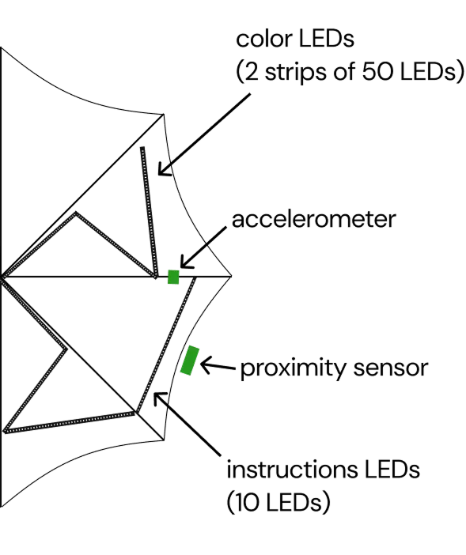
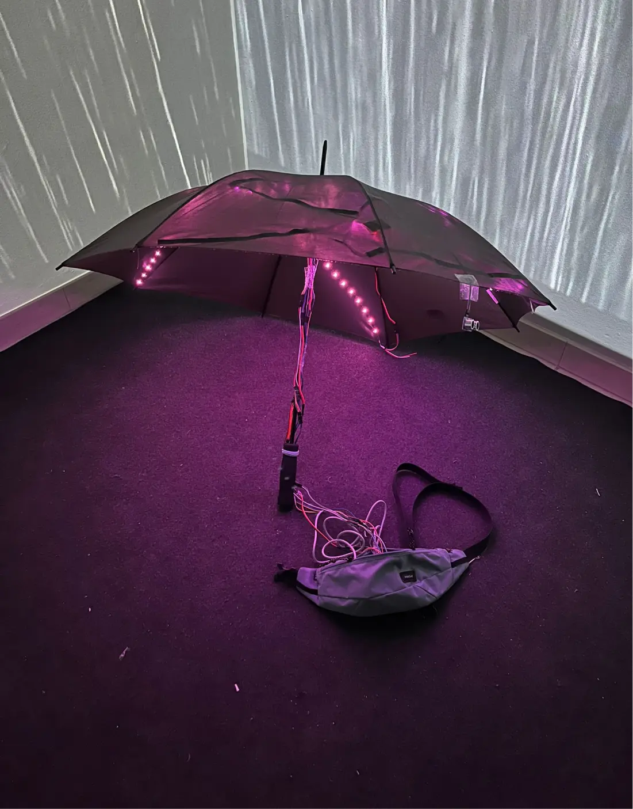
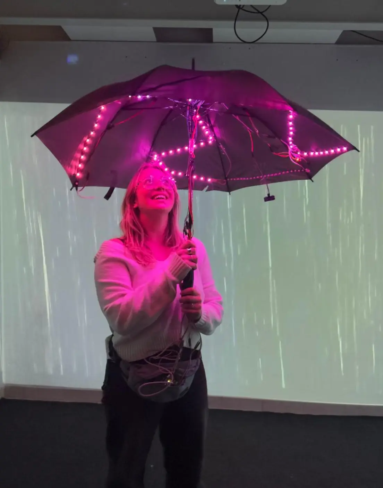
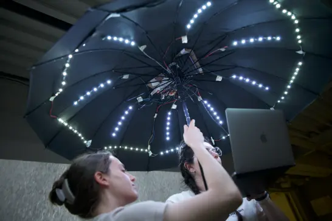
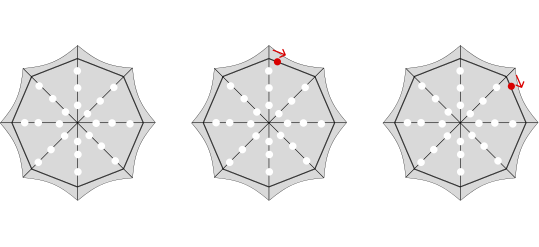
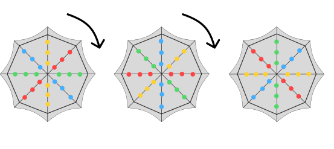
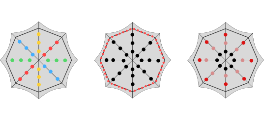
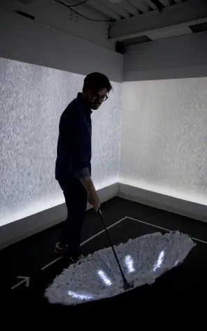
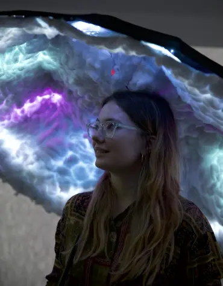

The problem
Travel memories are deeply sensory — the quality of light in a particular afternoon, the colour palette of a city you loved. Yet when we try to share them, we reach for photos that show the place but rarely convey how it felt to be there.
For the Embodied Interaction Studio at Politecnico di Milano, the brief asked us to design an embodied experience — physical, sensory, in space — not just a screen-based one. So we set out to close the gap between a place and the feeling of it.
The idea
Luma is a personal dome installation, an umbrella, that translates a travel photo into light and ambient sound. Colours extracted from the user's photo become a calm, meditative space unique to that memory. Photos become palettes, not pictures: preserving the feeling of a place rather than its record.
The umbrella was experienced in a room with the sound of rain and a looping rain video projected on the walls, to deepen the contemplative atmosphere of the moment.
In shared settings, two domes can approach each other and "contaminate" one another's colour fields — turning private memory into something visible and shared.
My role
Tools
- Figma
- Arduino Uno & ESP32
- Accelerometer & proximity sensor
- Umbrella, LED strips, cotton lining
The process
We took a Research through Design approach: experimenting with future practices through objects that might be. The driving question was how feelings experienced while travelling could be recalled through colour, inside a personal and meditative space.
The first prototype used an Arduino Uno with a powerbank for portability, an accelerometer to detect twisting, a proximity sensor to detect a second umbrella, and LED strips running along the inside as the main visual interface.



The outcome
We ran two rounds of user testing, using each to identify problems, iterate, and retest.
Round 1 — 8 users. The results were instructive. People didn't naturally understand the twirling gesture, and many stood still rather than moving through the space. The two-umbrella interaction was unclear without something guiding users toward it.
Round 2 — 16 users. To address what we found, we upgraded to an ESP32 board for better proximity detection, added longer cables, lined the inside of the umbrella with cotton to diffuse the LEDs, and introduced a physical path guiding users toward the centre, where the shared interaction happens. The testing was conducted in Politecnico di Milano's Edme Lab.

We redesigned the interaction into three clear moments, each building on the previous:
Opening the umbrella
White instructional LEDs pulse when the umbrella opens, then begin rotating around the rim — prompting the user to twirl.

Twirling the umbrella
After the twirl, the LEDs display the colours extracted from the user's uploaded travel image — one colour per spoke, spinning continuously.

Approaching another umbrella
When two umbrellas approach, a proximity alert triggers — the personal colours blend and contaminate each other's LED patterns.

The final installation, in use:


Reflection
Luma is one of the projects I enjoyed the most, because the design problem was fundamentally about feeling rather than function. There's no right or wrong way to experience a memory — which made the design challenge harder, and more interesting, than a typical UX brief.
Running the user testing was where I learned the most. The first round quickly revealed that the interaction wasn't as intuitive as we assumed. What I found valuable wasn't just discovering the problems — it was realising how differently people experience the same interaction.
The second round, after integrating a clearer path and the right atmosphere, confirmed that context and atmosphere matter as much as the interaction itself. Setting shapes meaning. That's a lesson that applies far beyond installation design.